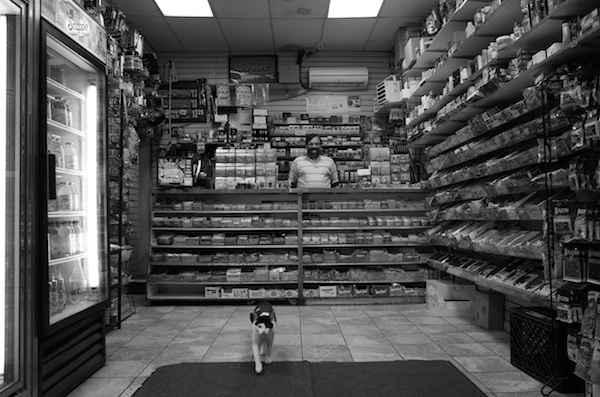

<!DOCTYPE HTML>
<html>
<head>
<meta http-equiv="Content-Type" content="text/html; charset=utf-8">
<title>Demo Gallery</title>
<style type="text/css">
html, body {
  margin: 0; padding: 0; border: 0
}
#container {
  border: 1px solid red;
  background: #eee;
  width: 377px;
  height: 355px;
  padding: 0 0 5px 0;
  overflow-y: scroll
}
#container img {
  border: 1px solid red;
  float: left; margin: 5px 0 0 5px
}
</style>
<script type="text/javascript" src="https://ajax.googleapis.com/ajax/libs/jquery/1.4.4/jquery.min.js"></script>
<script type="text/javascript">
$(document).ready(function() {

  //fill container with test images
  $('#container').append(
    '<a href="http://plonsker.github.io/imgs/DSC01140.JPG" target="_blank"></a>',
'<a href="http://plonsker.github.io/imgs/DSC08635.JPG" target="_blank"></a>',
'<a href="http://plonsker.github.io/imgs/DSC09272.JPG" target="_blank"></a>',
'<a href="http://plonsker.github.io/imgs/DSC00231.JPG" target="_blank"></a>',
'<a href="http://plonsker.github.io/imgs/R0090161.JPG" target="_blank"></a>',
'<a href="http://plonsker.github.io/imgs/DSC02524.JPG" target="_blank"></a>',
'<a href="http://plonsker.github.io/imgs/DSC07810.JPG" target="_blank"></a>',
'<a href="http://plonsker.github.io/imgs/DSC09359.JPG" target="_blank"></a>',
'<a href="http://plonsker.github.io/imgs/R0067950.JPG" target="_blank"></a>',
'<a href="http://plonsker.github.io/imgs/R0044309-01.jpeg" target="_blank"></a>',
'<a href="http://plonsker.github.io/imgs/R0090116.JPG" target="_blank"></a>',
'<a href="http://plonsker.github.io/imgs/DSC03670.JPG" target="_blank"></a>',
'<a href="http://plonsker.github.io/imgs/R0068138.JPG" target="_blank"></a>',
'<a href="http://plonsker.github.io/imgs/R0090160.JPG" target="_blank"></a>',
'<a href="http://plonsker.github.io/imgs/R0043895.JPG" target="_blank"></a>',
'<a href="http://plonsker.github.io/imgs/R0068598.JPG" target="_blank"></a>',
'<a href="http://plonsker.github.io/imgs/R0050424.JPG" target="_blank"></a>',
'<a href="http://plonsker.github.io/imgs/DSC02498.JPG" target="_blank"></a>',
'<a href="http://plonsker.github.io/imgs/R0071233.JPG" target="_blank"></a>',
'<a href="http://plonsker.github.io/imgs/DSC00924.JPG" target="_blank"></a>',
'<a href="http://plonsker.github.io/imgs/R0069389.JPG" target="_blank"></a>',
'<a href="http://plonsker.github.io/imgs/R0090074.JPG" target="_blank"></a>',
'<a href="http://plonsker.github.io/imgs/DSC04482.JPG" target="_blank"></a>',
'<a href="http://plonsker.github.io/imgs/bridge.JPG" target="_blank"></a>',
'<a href="http://plonsker.github.io/imgs/R0066646-02.jpeg" target="_blank"></a>',
'<a href="http://plonsker.github.io/imgs/R0090082.JPG" target="_blank"></a>',
'<a href="http://plonsker.github.io/imgs/R0090078.JPG" target="_blank"></a>',
'<a href="http://plonsker.github.io/imgs/DSC00498.JPG" target="_blank"></a>',
'<a href="http://plonsker.github.io/imgs/R0069863.JPG" target="_blank"></a>',
'<a href="http://plonsker.github.io/imgs/5th_ave_women.JPG" target="_blank"></a>',
'<a href="http://plonsker.github.io/imgs/R0069868.JPG" target="_blank"></a>',
'<a href="http://plonsker.github.io/imgs/DSC00614.JPG" target="_blank"></a>',
'<a href="http://plonsker.github.io/imgs/IMG_20160115_135100-01.jpeg" target="_blank"></a>',
'<a href="http://plonsker.github.io/imgs/DSC07349.JPG" target="_blank"></a>',
'<a href="http://plonsker.github.io/imgs/R0069867.JPG" target="_blank"></a>',
'<a href="http://plonsker.github.io/imgs/R0041635-01.jpeg" target="_blank"></a>',
'<a href="http://plonsker.github.io/imgs/DSC07423.JPG" target="_blank"></a>',
'<a href="http://plonsker.github.io/imgs/R0066334.JPG" target="_blank"></a>',
'<a href="http://plonsker.github.io/imgs/R0071196.JPG" target="_blank"></a>',
'<a href="http://plonsker.github.io/imgs/DSC07405.JPG" target="_blank"></a>',
'<a href="http://plonsker.github.io/imgs/R0068235.JPG" target="_blank"></a>',
'<a href="http://plonsker.github.io/imgs/DSC01102.JPG" target="_blank"></a>',
'<a href="http://plonsker.github.io/imgs/DSC07797.JPG" target="_blank"></a>',
'<a href="http://plonsker.github.io/imgs/DSC03445.JPG" target="_blank"></a>',
'<a href="http://plonsker.github.io/imgs/R0041670-01.jpeg" target="_blank"></a>',
'<a href="http://plonsker.github.io/imgs/R0045773.JPG" target="_blank"></a>',
'<a href="http://plonsker.github.io/imgs/R0066260.JPG" target="_blank"></a>',
'<a href="http://plonsker.github.io/imgs/R0067762.JPG" target="_blank"></a>',
'<a href="http://plonsker.github.io/imgs/R0061790.JPG" target="_blank"></a>',
'<a href="http://plonsker.github.io/imgs/R0050115.JPG" target="_blank"></a>',
'<a href="http://plonsker.github.io/imgs/R0064871-02.jpeg" target="_blank"></a>',
'<a href="http://plonsker.github.io/imgs/R0065067.JPG" target="_blank"></a>',
'<a href="http://plonsker.github.io/imgs/R0041713-01.jpeg" target="_blank"></a>',
'<a href="http://plonsker.github.io/imgs/R0041639-01.jpeg" target="_blank"></a>',
'<a href="http://plonsker.github.io/imgs/R0041685-01.jpeg" target="_blank"></a>',
'<a href="http://plonsker.github.io/imgs/DSC02450.JPG" target="_blank"></a>',
'<a href="http://plonsker.github.io/imgs/DSC02932.JPG" target="_blank"></a>',
'<a href="http://plonsker.github.io/imgs/DSC02523.JPG" target="_blank"></a>',
'<a href="http://plonsker.github.io/imgs/DSC07029.JPG" target="_blank"></a>',
'<a href="http://plonsker.github.io/imgs/R0046113-01.jpeg" target="_blank"></a>',
'<a href="http://plonsker.github.io/imgs/DSC06230.JPG" target="_blank"></a>',
'<a href="http://plonsker.github.io/imgs/DSC09227.JPG" target="_blank"></a>',
'<a href="http://plonsker.github.io/imgs/DSC07460.JPG" target="_blank"></a>',
'<a href="http://plonsker.github.io/imgs/DSC00494.JPG" target="_blank"></a>',
'<a href="http://plonsker.github.io/imgs/R0048546.JPG" target="_blank"></a>',
'<a href="http://plonsker.github.io/imgs/R0048218.JPG" target="_blank"></a>',
'<a href="http://plonsker.github.io/imgs/DSC02525.JPG" target="_blank"></a>',
'<a href="http://plonsker.github.io/imgs/DSC00928.JPG" target="_blank"></a>',
'<a href="http://plonsker.github.io/imgs/R0065326.JPG" target="_blank"></a>',
'<a href="http://plonsker.github.io/imgs/DSC00569.JPG" target="_blank"></a>',
'<a href="http://plonsker.github.io/imgs/R0064404.JPG" target="_blank"></a>',
'<a href="http://plonsker.github.io/imgs/DSC07647.JPG" target="_blank"></a>',
'<a href="http://plonsker.github.io/imgs/R0041700-01.jpeg" target="_blank"></a>',
'<a href="http://plonsker.github.io/imgs/DSC09125.JPG" target="_blank"></a>',
'<a href="http://plonsker.github.io/imgs/DSC00588.JPG" target="_blank"></a>',
'<a href="http://plonsker.github.io/imgs/R0062523.JPG" target="_blank"></a>',
'<a href="http://plonsker.github.io/imgs/R0067564.JPG" target="_blank"></a>',
'<a href="http://plonsker.github.io/imgs/DSC02013.JPG" target="_blank"></a>',
'<a href="http://plonsker.github.io/imgs/DSC00226.JPG" target="_blank"></a>',
'<a href="http://plonsker.github.io/imgs/R0064656-01.jpeg" target="_blank"></a>',
'<a href="http://plonsker.github.io/imgs/R0066625.JPG" target="_blank"></a>',
'<a href="http://plonsker.github.io/imgs/R0043461.JPG" target="_blank"></a>',
'<a href="http://plonsker.github.io/imgs/DSC08251.JPG" target="_blank"></a>',
'<a href="http://plonsker.github.io/imgs/R0062763.JPG" target="_blank"></a>',
'<a href="http://plonsker.github.io/imgs/R0047314.JPG" target="_blank"></a>',
'<a href="http://plonsker.github.io/imgs/DSC08811.JPG" target="_blank"></a>',
'<a href="http://plonsker.github.io/imgs/R0066955.JPG" target="_blank"></a>',
'<a href="http://plonsker.github.io/imgs/R0067293.JPG" target="_blank"></a>',
'<a href="http://plonsker.github.io/imgs/DSC09973.JPG" target="_blank"></a>',
'<a href="http://plonsker.github.io/imgs/R0048516.JPG" target="_blank"></a>',
'<a href="http://plonsker.github.io/imgs/R0043379.JPG" target="_blank"></a>',
'<a href="http://plonsker.github.io/imgs/DSC08346.JPG" target="_blank"></a>',
'<a href="http://plonsker.github.io/imgs/DSC00230.JPG" target="_blank"></a>',
'<a href="http://plonsker.github.io/imgs/DSC07854.JPG" target="_blank"></a>',
'<a href="http://plonsker.github.io/imgs/DSC05654.JPG" target="_blank"></a>',
'<a href="http://plonsker.github.io/imgs/DSC05715.JPG" target="_blank"></a>',
'<a href="http://plonsker.github.io/imgs/DSC05566.JPG" target="_blank"></a>',
'<a href="http://plonsker.github.io/imgs/DSC08368.JPG" target="_blank"></a>',
'<a href="http://plonsker.github.io/imgs/DSC06234.JPG" target="_blank"></a>',
'<a href="http://plonsker.github.io/imgs/R0061698.JPG" target="_blank"></a>',
'<a href="http://plonsker.github.io/imgs/DSC00212.JPG" target="_blank"></a>',
'<a href="http://plonsker.github.io/imgs/R0044962.JPG" target="_blank"></a>',
'<a href="http://plonsker.github.io/imgs/DSC04743.JPG" target="_blank"></a>',
'<a href="http://plonsker.github.io/imgs/DSC03499.JPG" target="_blank"></a>',
'<a href="http://plonsker.github.io/imgs/bridge.JPG" target="_blank"></a>',
'<a href="http://plonsker.github.io/imgs/R0066155.JPG" target="_blank"></a>',
'<a href="http://plonsker.github.io/imgs/R0041665-02.jpeg" target="_blank"></a>',
'<a href="http://plonsker.github.io/imgs/R0045889.JPG" target="_blank"></a>',
'<a href="http://plonsker.github.io/imgs/R0046152-01.jpeg" target="_blank"></a>',
'<a href="http://plonsker.github.io/imgs/DSC09992.JPG" target="_blank"></a>',
'<a href="http://plonsker.github.io/imgs/R0044323.JPG" target="_blank"></a>',
'<a href="http://plonsker.github.io/imgs/DSC07162.JPG" target="_blank"></a>',
'<a href="http://plonsker.github.io/imgs/DSC05745.JPG" target="_blank"></a>',
'<a href="http://plonsker.github.io/imgs/R0041711-1-01.jpeg" target="_blank"></a>',
'<a href="http://plonsker.github.io/imgs/DSC03252.JPG" target="_blank"></a>',
'<a href="http://plonsker.github.io/imgs/R0061200-01.jpeg" target="_blank"></a>',
'<a href="http://plonsker.github.io/imgs/DSC00440.JPG" target="_blank"></a>',
'<a href="http://plonsker.github.io/imgs/R0041706-1-01.jpeg" target="_blank"></a>',
'<a href="http://plonsker.github.io/imgs/DSC00290.JPG" target="_blank"></a>',
'<a href="http://plonsker.github.io/imgs/DSC04614.JPG" target="_blank"></a>',
'<a href="http://plonsker.github.io/imgs/DSC08980.JPG" target="_blank"></a>',
'<a href="http://plonsker.github.io/imgs/DSC08900.JPG" target="_blank"></a>',
'<a href="http://plonsker.github.io/imgs/DSC05616-01.jpeg" target="_blank"></a>',
'<a href="http://plonsker.github.io/imgs/R0067071.JPG" target="_blank"></a>',
'<a href="http://plonsker.github.io/imgs/DSC00033.JPG" target="_blank"></a>',
'<a href="http://plonsker.github.io/imgs/R0068543.JPG" target="_blank"></a>',
'<a href="http://plonsker.github.io/imgs/R0067841.JPG" target="_blank"></a>',
'<a href="http://plonsker.github.io/imgs/R0041717-02.jpeg" target="_blank"></a>',
'<a href="http://plonsker.github.io/imgs/DSC07295.JPG" target="_blank"></a>',
'<a href="http://plonsker.github.io/imgs/DSC01090.JPG" target="_blank"></a>',
'<a href="http://plonsker.github.io/imgs/DSC04536.JPG" target="_blank"></a>',
'<a href="http://plonsker.github.io/imgs/DSC06501.JPG" target="_blank"></a>',
'<a href="http://plonsker.github.io/imgs/DSC05693.JPG" target="_blank"></a>',
'<a href="http://plonsker.github.io/imgs/DSC02445.JPG" target="_blank"></a>',
'<a href="http://plonsker.github.io/imgs/R0067819.JPG" target="_blank"></a>',
'<a href="http://plonsker.github.io/imgs/DSC01817.JPG" target="_blank"></a>',
'<a href="http://plonsker.github.io/imgs/R0041654-02.jpeg" target="_blank"></a>',
'<a href="http://plonsker.github.io/imgs/R0061436.JPG" target="_blank"></a>',
'<a href="http://plonsker.github.io/imgs/R0041693.JPG" target="_blank"></a>',
'<a href="http://plonsker.github.io/imgs/DSC08810.JPG" target="_blank"></a>',
'<a href="http://plonsker.github.io/imgs/R0041708-01.jpeg" target="_blank"></a>',
'<a href="http://plonsker.github.io/imgs/wtc_plonsker.JPG" target="_blank"></a>',
'<a href="http://plonsker.github.io/imgs/DSC03394.JPG" target="_blank"></a>',
'<a href="http://plonsker.github.io/imgs/R0064322-02.jpeg" target="_blank"></a>',
'<a href="http://plonsker.github.io/imgs/DSC06128.JPG" target="_blank"></a>',
'<a href="http://plonsker.github.io/imgs/R0050091.JPG" target="_blank"></a>',
'<a href="http://plonsker.github.io/imgs/R0060117.JPG" target="_blank"></a>',
'<a href="http://plonsker.github.io/imgs/DSC04711.JPG" target="_blank"></a>',
'<a href="http://plonsker.github.io/imgs/R0041959-01.jpeg" target="_blank"></a>',
'<a href="http://plonsker.github.io/imgs/DSC08604.JPG" target="_blank"></a>',
'<a href="http://plonsker.github.io/imgs/DSC01116.JPG" target="_blank"></a>',
'<a href="http://plonsker.github.io/imgs/DSC03168.JPG" target="_blank"></a>',
'<a href="http://plonsker.github.io/imgs/R0048597-03.jpeg" target="_blank"></a>',
'<a href="http://plonsker.github.io/imgs/DSC02448.JPG" target="_blank"></a>',
'<a href="http://plonsker.github.io/imgs/DSC08352.JPG" target="_blank"></a>',
'<a href="http://plonsker.github.io/imgs/DSC04759.JPG" target="_blank"></a>',
'<a href="http://plonsker.github.io/imgs/DSC02534.JPG" target="_blank"></a>',
'<a href="http://plonsker.github.io/imgs/DSC01132.JPG" target="_blank"></a>',
'<a href="http://plonsker.github.io/imgs/DSC00912.JPG" target="_blank"></a>',
'<a href="http://plonsker.github.io/imgs/R0041642.JPG" target="_blank"></a>',
'<a href="http://plonsker.github.io/imgs/DSC00513.JPG" target="_blank"></a>',
'<a href="http://plonsker.github.io/imgs/R0043926-01.jpeg" target="_blank"></a>',
'<a href="http://plonsker.github.io/imgs/DSC06956.JPG" target="_blank"></a>',
'<a href="http://plonsker.github.io/imgs/DSC03374.JPG" target="_blank"></a>',
'<a href="http://plonsker.github.io/imgs/R0068233-01.jpeg" target="_blank"></a>',
'<a href="http://plonsker.github.io/imgs/DSC09030-01.jpeg" target="_blank"></a>',
'<a href="http://plonsker.github.io/imgs/R0067287-01.jpeg" target="_blank"></a>',
'<a href="http://plonsker.github.io/imgs/DSC06371.JPG" target="_blank"></a>',
'<a href="http://plonsker.github.io/imgs/R0040160-01.jpeg" target="_blank"></a>',
'<a href="http://plonsker.github.io/imgs/DSC00236.JPG" target="_blank"></a>',
'<a href="http://plonsker.github.io/imgs/DSC07858.JPG" target="_blank"></a>',
'<a href="http://plonsker.github.io/imgs/R0066892.JPG" target="_blank"></a>',
'<a href="http://plonsker.github.io/imgs/R0067263.JPG" target="_blank"></a>',
'<a href="http://plonsker.github.io/imgs/DSC04467.JPG" target="_blank"></a>',
'<a href="http://plonsker.github.io/imgs/DSC05737.JPG" target="_blank"></a>',
'<a href="http://plonsker.github.io/imgs/DSC06717.JPG" target="_blank"></a>',
'<a href="http://plonsker.github.io/imgs/IMG_20160711_221718-01.jpeg" target="_blank"></a>',
'<a href="http://plonsker.github.io/imgs/R0066362.JPG" target="_blank"></a>',
'<a href="http://plonsker.github.io/imgs/DSC03373.JPG" target="_blank"></a>',
'<a href="http://plonsker.github.io/imgs/R0067421.JPG" target="_blank"></a>',
'<a href="http://plonsker.github.io/imgs/DSC03674.JPG" target="_blank"></a>',
'<a href="http://plonsker.github.io/imgs/R0060115.JPG" target="_blank"></a>')

  var $images = $('#container img');

  $images.hide();

  $images.each(function(index) {
      $(this).delay(index * 50).fadeIn();
  });

});
</script>
</head>

<body>

<div id="container">
  <a href="http://www.google.com/images/logos/ps_logo2.png" target="_blank"></a>
</div>

</body>
</html>
